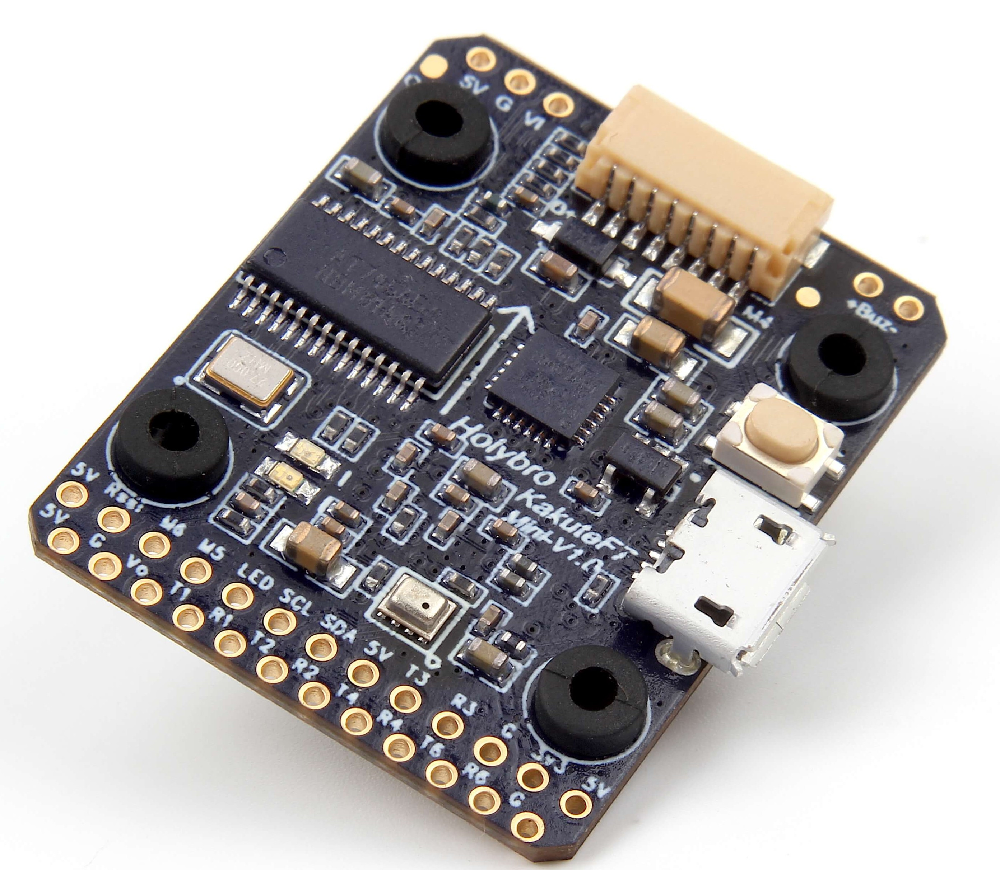
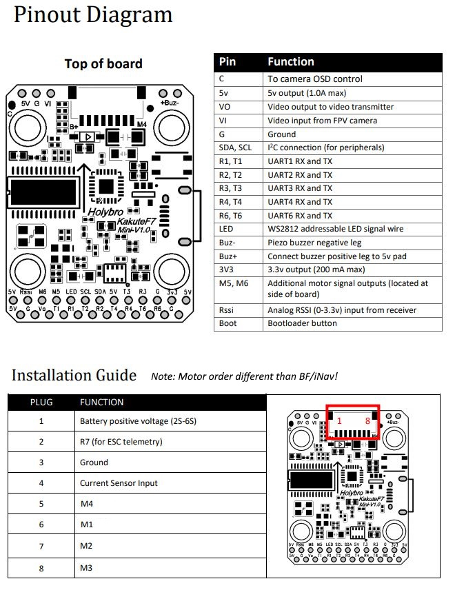

Holybro Kakute F7 Mini¶
above image and some content courtesy of Holybro
Note
Support for this board is available with ArduPilot-4.0 (and higher). Only the V1 and V2 boards are supported. The V3 board changed microporcessor type and is no longer capable of running ArduPilot.
Note
Due to flash memory limitations, this board does not include all ArduPilot features. See Firmware Limitations for details.
Specifications¶
Processor
STM32F745VGH6 32-bit processor
Sensors
InvenSense ICM20689 IMU (accel, gyro, compass) on vibration isolating foam
BMP280 barometers
Power
7V ~ 42V input power directly from battery
Interfaces
6x PWM outputs
1x RC input
7x UARTs/serial for GPS and other peripherals
1x I2C port for external compass
micro USB port
Where to Buy¶
Pinout¶
{kind=link}
UART Mapping¶
The UARTs are marked Rn and Tn in the above pinouts. The Rn pin is the receive pin for UARTn. The Tn pin is the transmit pin for UARTn.
SERIAL0 -> USB
SERIAL1 -> UART1 (Telem1)
SERIAL2 -> UART2 (Telem2)
SERIAL3 -> UART3 (GPS)
SERIAL4 -> UART4
SERIAL6 -> UART6 (TX only unless BRD_ALT_CONFIG = 1, then RX available also)
SERIAL7 -> UART7 (Receive only, ESC Telemetry)
RC Input¶
RC input is configured on the R6 (UART6_RX) pin. It supports all RC protocols except PPM. See Radio Control Systems for details for a specific RC system. SERIAL6_PROTOCOL is set to “23”, by default, to enable this.
SBUS/DSM/SRXL connects to the R6 pin but SBUS requires that the SERIAL6_OPTIONS be set to “3”.
FPort requires connection to T6 and SERIAL6_OPTIONS be set to “7”.
CRSF also requires a T6 connection, in addition to R6, and automatically provides telemetry. Set SERIAL6_OPTIONS to “0”.
SRXL2 requires a connection to T6 and automatically provides telemetry. Set SERIAL6_OPTIONS to “4”.
Any UART can be used for RC system connections in ArduPilot also, and is compatible with all protocols except PPM. See Radio Control Systems for details.
FrSky Telemetry¶
FrSky Telemetry is supported using the T6 pin (UART6 transmit). You need to set the following parameters to enable support for FrSky S.PORT.
SERIAL6_PROTOCOL 4 or 10
Note
FrSky Telemetry is supported on all UARTs, UART6 TX is suggested as its RX input is already being used for RC input and avoids consuming another UART.
OSD Support¶
The KakuteF7 Mini supports OSD using OSD_TYPE 1 (MAX7456 driver).
PWM Output¶
TThe KakuteF7 Mini supports up to 6 outputs. M1 to M4 are accessed via the connector and are bi-directional capable. M5 and M6 are the pads shown on the above diagram. M1-4 and M6 outputs support DShot as well as all PWM types.M5 only supports PWM.
The PWM is in 3 groups:
PWM 1, 4 in group1
PWM 2 and 3 in group2
PWM 5 in group3
PWM 6 in group4
Channels within the same group need to use the same output rate. If any channel in a group uses DShot then all channels in the group need to use DShot.
Battery Monitoring¶
The board has a built-in voltage sensor. The voltage sensor can handle up to 6S LiPo batteries. An external current sensor can be attached to pin 4 on the ESC connector.
The correct battery setting parameters are:
BATT_MONITOR 4, if external sensor used; 3 for voltage only
BATT_CURR_PIN 12 , if external sensor used.
BATT_VOLT_MULT 10.9
BATT_AMP_PERVLT should be set to match external current sensor, if used.
Compass¶
The KakuteF7 Mini does not have a built-in compass, but you can attach an external compass using I2C on the SDA and SCL pads.
Logging¶
The KakuteF7 Mini supports on-board data flash logging.
Loading ArduPilot onto the board¶
Initial firmware load can be done with DFU by plugging in USB with the bootloader button pressed. Then you should load the “with_bl.hex” firmware, using your favourite DFU loading tool.
Once the initial firmware is loaded you can update the firmware using any ArduPilot ground station software. Updates should be done with the xxxxxxxxxx.apj firmware files.
Firmware¶
Firmware for this board can be found here in sub-folders labeled “KakuteF7Mini”.
[copywiki destination=”plane,copter,rover,blimp”]